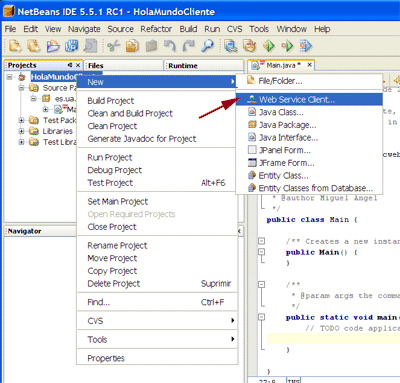
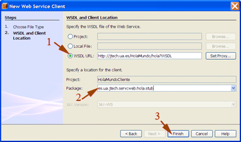
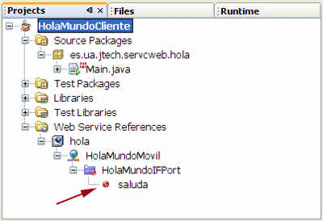
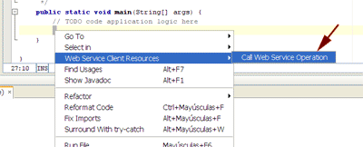
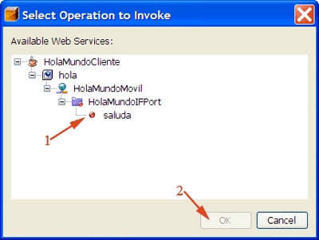
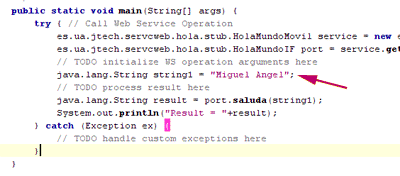

Introducción a los Servicios Web
El diseño del software tiende a ser cada vez más modular. Las aplicaciones se componen de una serie de componentes (servicios) reutilizables, que pueden encontrarse distribuidos a lo largo de una serie de máquinas conectadas en red.
Los Servicios Web nos permitirán distribuir nuestra aplicación a través de Internet, pudiendo una aplicación utilizar los servicios ofrecidos por cualquier servidor conectado a Internet.
¿Qué es un Servicio Web?
Un Servicio Web es un componente al que podemos acceder mediante protocolos Web estándar, utilizando XML para el intercambio de información.
Normalmente nos referimos con Servicio Web a una colección de procedimientos (métodos) a los que podemos llamar desde cualquier lugar de Internet o de nuestra intranet, siendo este mecanismo de invocación totalmente independiente de la plataforma que utilicemos y del lenguaje de programación en el que se haya implementado internamente el servicio.
Cuando conectamos a un servidor web desde nuestro navegador, el servidor nos devuelve la página web solicitada, que es un documento que se mostrará en el navegador para que lo visualice el usuario, pero es difícilmente entendible por una máquina. Podemos ver esto como web para humanos. En contraposición, los Servicios Web ofrecen información con un formato estándar que puede ser entendido fácilmente por una aplicación. En este caso estaríamos ante una web para máquinas.
Características de los Servicios Web
Las características deseables de un Servicio Web son:
- Un servicio debe poder ser accesible a través de la Web. Para ello debe utilizar protocolos de transporte estándares como HTTP, y codificar los mensajes en un lenguaje estándar que pueda conocer cualquier cliente que quiera utilizar el servicio.
- Un servicio debe contener una descripción de sí mismo. De esta forma, una aplicación podrá saber cuál es la función de un determinado Servicio Web, y cuál es su interfaz, de manera que pueda ser utilizado de forma automática por cualquier aplicación, sin la intervención del usuario.
- Debe poder ser localizado. Deberemos tener algún mecanismo que nos permita encontrar un Servicio Web que realice una determinada función. De esta forma tendremos la posibilidad de que una aplicación localice el servicio que necesite de forma automática, sin tener que conocerlo previamente el usuario.
Arquitecturas Orientadas a Servicios
Las arquitecturas orientadas a servicios (SOA) se basan en el desarrollo de servicios altamente reutilizables, y en la combinación de estos servicios para dar lugar a nuestra aplicación.
Estos servicios idealmente deberían tener una interfaz estándar bien definida, de forma que se pueda integrar fácilmente en cualquier aplicación. Además no debe tener estado, ni depender del estado de otros componentes. Debe recibir toda la información necesaria en la petición.
Se conoce como orquestación de servicios la secuenciación de llamadas a diferentes servicios para realizar un determinado proceso de negocio. Al no tener estado, los servicios se podrán secuenciar en cualquier orden, pudiendo formar así diferentes flujos que implementen la lógica de negocio.
Normalmente cuando hablamos de arquitecturas orientadas a servicios pensamos en su implementación mediante servicios web. Sin embargo, estas arquitecturas puedes estar formadas por cualquier tipo de servicio, como pueden ser por ejemplo servicios accesibles mediante JMS. En el caso de una SOA implementada mediante Servicios Web, sus servicios serán accesibles a través de la web.
En una arquitectura orientada a servicios podemos distinguir tres agentes con diferentes funciones:
| Proveedor de servicio | Implementa unas determinadas operaciones (servicio). Un cliente podrá solicitar uno de estos servicios a este proveedor. | |
| Cliente del servicio | Invoca a un proveedor de servicio para la realización de alguna de los operaciones que proporciona. | |
| Registro de servicios | Mantiene una lista de proveedores de servicios disponibles, junto a sus descripciones. | |
El mecanismo básico de invocación de servicios consistirá en que un cliente solicitará un determinado servicio a un proveedor, efectuando el proveedor dicho servicio. El servidor devolverá una respuesta al cliente como resultado del servicio invocado.
Esto podremos hacerlo así si el cliente conoce de antemano el proveedor del cual va a obtener el servicio. Pero hemos de pensar que en Internet encontraremos una gran cantidad de Servicios Web dispersos, lo cual hará difícil localizar el que busquemos. Además, si hemos localizado uno que realiza la función que necesitamos, si dicho servicio no está mantenido por nosotros puede ocurrir que en algún momento este servicio cambie de lugar, de interfaz o simplemente desaparezca, por lo que no podremos confiar en que vayamos a poder utilizar siempre este mismo servicio.
Los registros de servicios nos permiten automatizar la localización de Servicios Web. Un proveedor puede anunciarse en un determinado registro, de forma que figurará en dicho registro la localización de este servicio junto a una descripción de su funcionalidad y de su interfaz, que podrá ser entendida por una aplicación.
Cuando un cliente necesite un determinado servicio, puede acudir directamente a un registro y solicitar el tipo de servicio que necesita. Para ello es importante establecer un determinada semántica sobre las posibles descripciones de funcionalidades de servicios, evitando las posibles ambigüedades.
El registro devolverá entonces una lista de servicios que realicen la función deseada, de los cuales el cliente podrá elegir el más apropiado, analizar su interfaz, e invocarlo.
Arquitectura de los Servicios Web
Los protocolos utilizados en los Servicios Web se organizan en una serie de capas:
| Capa | Descripción | |
| Transporte de servicios | Es la capa que se encarga de transportar los mensajes entre aplicaciones. Normalmente se utiliza el protocolo HTTP para este transporte, aunque los servicios web pueden viajar mediante otros protocolos de transferencia de hipertexto como SMTP, FTP o BEEP. | |
| Mensajería XML | Es la capa responsable de codificar los mensajes en XML de forma que puedan ser entendidos por cualquier aplicación. Puede implementar los protocolos XML-RPC o SOAP. | |
| Descripción de servicios | Se encarga de definir la interfaz pública de un determinado servicio. Está definición se realiza mediante WSDL. | |
| Localización de servicios | Se encarga del registro centralizado de servicios, permitiendo que estos sean anunciados y localizados. Para ello se utiliza el protocolo UDDI. | |
Más adelante describiremos cada una de las tecnologías para Servicios Web vistas en las distintas capas.
Seguridad
En la utilización de los Servicios Web, encontramos problemas de seguridad en diferentes aspectos. Podemos encontrar problemas de seguridad en cuanto a la confidencialidad, la autentificación y la seguridad de la red.
Confidencialidad
Cuando un cliente utiliza un Servicio Web, deberá enviarle un mensaje a este servicio a través de la red, y el servicio le responderá mediante otro mensaje. Estos mensajes contendrán información que puede ser confidencial.
Dado que estos mensajes se envían mediante protocolo HTTP, podrán ser encriptados mediante SSL evitando de esta forma que puedan ser interceptados por un tercero.
Sin embargo, en aplicaciones en las que el mensaje deba atravesar una cadena de servicios, este mensaje deberá desencriptarse y volverse a encriptar entero en cada uno de estos servicios, por lo que los datos estarán inseguros dentro de cada nodo. Podríamos solucionar este problema permitiendo que sólo se desencripte en cada nodo una parte del mensaje, que será la parte que atañe a dicho nodo, pero que no pueda acceder al resto del mensaje que no le concierne.
Autentificación
Puede que necesitemos identificar a un usuario para prestarle un determinado servicio, o bien para saber si tiene autorización para acceder a dicho servicio.
Podemos utilizar para ello la autentificación que nos proporciona el protocolo HTTP. Encontramos el mismo problema que en el caso anterior, necesitamos invocar un conjunto de servicios, deberemos autentificarnos por separado para cada uno de ellos, ya que pueden estar distribuidos en distintos servidores a través de Internet. Para solucionar este problema, deberíamos contar con un contexto compartido global de donde cualquier servicio pudiese obtener esta información de autentificación.
Tanto Microsoft Passport como Liberty Project (formado por una alianza de empresas entre las que se encuentra Sun) pretenden dar solución a este problema, proporcionando un servicio de autentificación centralizado. De esta forma podremos acceder a diferentes servicios utilizando siempre el mismo login, ya que todos podrían utilizar el mismo servidor de identidades para autentificarnos.
Seguridad de la red
Hemos de pensar que estamos permitiendo invocar procedimientos remotos mediante protocolo HTTP, que en un principio fue diseñado para la extracción de documentos. Por lo tanto, sus puertos no suelen ser cortados por ningún firewall, de forma cualquiera podrá utilizar estos servicios libremente, sin que los firewalls puedan controlarlo.
Tecnologías básicas
Tenemos una serie de tecnologías, todas ellas basadas en XML, que son fundamentales para el desarrollo de Servicios Web. Estas tecnologías son independientes tanto del SO como del lenguaje de programación utilizado para implementar dichos servicios. Por lo tanto, serán utilizadas para cualquier Servicio Web, independientemente de la plataforma sobre la que construyamos dichos servicios (como puede ser J2EE o .NET).
SOAP
Se trata de un protocolo derivado de XML que nos sirve para intercambiar información entre aplicaciones.
Normalmente utilizaremos SOAP para conectarnos a un servicio e invocar métodos remotos, aunque puede ser utilizado de forma más genérica para enviar cualquier tipo de contenido. Podemos distinguir dos tipos de mensajes según su contenido:
- Mensajes orientados al documento: Contienen cualquier tipo de contenido que queramos enviar entre aplicaciones.
- Mensajes orientados a RPC: Este tipo de mensajes servirá para invocar procedimientos de forma remota (Remote Procedure Calls). Podemos verlo como un tipo más concreto dentro del tipo anterior, ya que en este caso como contenido del mensaje especificaremos el método que queremos invocar junto a los parámetros que le pasamos, y el servidor nos deberá devolver como respuesta un mensaje SOAP con el resultado de invocar el método.
Cuando hablamos de Servicios Web normalmente nos referimos a RPC, por lo que nos centraremos en este tipo de mensajes.
Puede ser utilizado sobre varios protocolos de transporte, aunque está especialmente diseñado para trabajar sobre HTTP.
Dentro del mensaje SOAP podemos distinguir los siguientes elementos:

- Un sobre (Envelope), que describe el mensaje, a quien va dirigido, y cómo debe ser procesado. El sobre incluye las definiciones de tipos que se usarán en el documento. Contiene una cabecera de forma opcional, y el cuerpo del mensaje.
- Una cabecera (Header) opcional, donde podemos incluir información sobre el mensaje. Por ejemplo, podemos especificar si el mensaje es obligatorio (debe ser entendido de forma obligatoria por el destinatario), e indicar los actores (lugares por donde ha pasado el mensaje).
- El cuerpo del mensaje (Body), que contiene el mensaje en si. En el caso de los mensajes RPC se define una convención sobre como debe ser este contenido, en el que se especificará el método al que se invoca y los valores que se pasan como parámetros. Puede contener un error de forma opcional.
- Un error (Fault) en el cuerpo del mensaje de forma opcional. Nos servirá para indicar en una respuesta SOAP que ha habido un error en el procesamiento del mensaje de petición que mandamos.
Hemos visto como los mensajes SOAP nos sirven para intercambiar cualquier documento XML entre aplicaciones. Pero puede ocurrir que necesitemos enviar en el mensaje datos que no son XML, como puede ser una imagen. En ese caso tendremos que recurrir a la especificación de mensajes SOAP con anexos.
Los mensajes SOAP con anexos añaden un elemento más al mensaje:

- El anexo (Attachment), puede contener cualquier tipo de contenido (incluido el XML). De esta forma podremos enviar cualquier tipo de contenido junto a un mensaje SOAP.
Nuestro mensaje podrá contener tantos anexos como queramos.
Un ejemplo de mensaje SOAP es el siguiente:
<SOAP-ENV:Envelope
xmlns:SOAP-ENV="http://schemas.xmlsoap.org/soap/envelope/"
SOAP-ENV:encodingStyle="http://schemas.xmlsoap.org/soap/encoding/">
<SOAP-ENV:Body>
<ns:getTemperatura xmlns:ns="http://j2ee.ua.es/ns">
<area>Alicante</area>
</ns:getTemperatura>
</SOAP-ENV:Body>
</SOAP-ENV:Envelope>
En él estamos llamando a nuestro método getTemperatura para obtener información meteorológica, proporcionando como parámetro el área de la que queremos obtener la temperatura.
Podemos encontrar la especificación de SOAP y SOAP con anexos publicada en la página del W3C, en las direcciones http://www.w3.org/TR/SOAP/ y http://www.w3.org/TR/SOAP-attachments respectivamente.
WSDL
Es otro lenguaje derivado de XML, que se utiliza para describir los Servicios Web, de forma que una aplicación pueda conocer de forma automática la función de un Servicio Web, así como la forma de uso de dicho Servicio Web.
El fichero WSDL describirá la interfaz del Servicio Web, con los métodos a los que podemos invocar, los parámetros que debemos proporcionarles y los tipos de datos de dichos parámetros.
Si desarrollamos un Servicio Web, y queremos que otras personas sean capaces de utilizar nuestro servicio para sus aplicaciones, podremos proporcionar un documento WSDL describiendo nuestro servicio. De esta forma, a partir de este documento otros usuarios podrán generar aplicaciones clientes en cualquier plataforma (ya que WSDL se define como un estándar) que se ajusten a nuestro servicio.
El elemento raíz dentro de este fichero es definitions, donde se especifican los espacios de nombres que utilizamos en nuestro servicio. Dentro de este elemento raíz encontramos los siguientes elementos:
- types: Se utiliza para definir los tipos de datos que se intercambiarán en el mensaje.
- message: Define los distintos mensajes que se intercambiaran durante el proceso de invocación del servicio. Se deberán definir los mensajes de entrada y salida para cada operación que ofrezca el servicio. En el caso de mensajes RPC, en el mensaje de entrada se definirán los tipos de parámetros que se proporcionan, y en el de salida el tipo del valor devuelto.
- portType: Define las operaciones que ofrece el servicio. De cada operación indica cuales son los mensajes de entrada y salida, de entre los mensajes definidos en el apartado anterior.
- binding: Indica el protocolo y el formato de los datos para cada mensaje de los definidos anteriormente. Este formato puede ser orientado al documento u orientado a RPC. Si es orientado al documento tanto el mensaje de entrada como el de salida contendrán un documento XML. Si es orientado a RPC el mensaje de entrada contendrá el método invocado y sus parámetros, y el de salida el resultado de invocar dicho método.
- service: Define el servicio como una colección de puertos a los que se puede acceder. Un puerto es la dirección (URL) donde el servicio actúa. Esta será la dirección a la que las aplicaciones deberán conectarse para acceder al servicio. Además contiene la documentación en lenguaje natural del servicio.
Un documento WSDL de ejemplo es el siguiente:
<?xml version="1.0" encoding="utf-8" ?>
<definitions xmlns:s="http://www.w3.org/2001/XMLSchema"
xmlns:http="http://schemas.xmlsoap.org/wsdl/http/"
xmlns:soap="http://schemas.xmlsoap.org/wsdl/soap/"
xmlns:soapenc="http://schemas.xmlsoap.org/soap/encoding/"
xmlns:tns="http://j2ee.ua.es/wsdl"
xmlns:mime="http://schemas.xmlsoap.org/wsdl/mime/"
targetNamespace="http://j2ee.ua.es/wsdl"
xmlns="http://schemas.xmlsoap.org/wsdl/">
<message name="getTempRequest">
<part name="string_1"
xmlns:partns="http://www.w3.org/2001/XMLSchema"
type="partns:string" />
</message>
<message name="getTempResponse">
<part name="double_1"
xmlns:partns="http://www.w3.org/2001/XMLSchema"
type="partns:double" />
</message>
<portType name="TempPortType">
<operation name="getTemp">
<input message="tns:getTempRequest" />
<output message="tns:getTempResponse" />
</operation>
</portType>
<binding name="TempPortSoapBinding" type="tns:TempPortType">
<soap:binding style="rpc"
transport="http://schemas.xmlsoap.org/soap/http" />
<operation name="getTemp">
<soap:operation soapAction=" style="rpc" />
<input>
<soap:body use="encoded"
namespace="http://j2ee.ua.es/wsdl"
encodingStyle=
"http://schemas.xmlsoap.org/soap/encoding/" />
</input>
<output>
<soap:body use="encoded"
namespace="http://j2ee.ua.es/wsdl"
encodingStyle=
"http://schemas.xmlsoap.org/soap/encoding/" />
</output>
</operation>
</binding>
<service name="Temp">
<documentation>Documentacion</documentation>
<port name="TempPort" binding="tns:TempPortSoapBinding">
<soap:address
location="http://localhost:7001/sw_temp/Temp" />
</port>
</service>
</definitions>
En el que se define un servicio que proporciona el método getTemp, que toma como parámetro una cadena con el nombre del área que queremos consultar, y nos devuelve un valor real.
En los elementos message vemos que tenemos dos mensajes: los mensajes de entrada y salida de la operación getTemp de nuestro servicio. El mensaje de entrada contiene un dato de tipo string (el parámetro del método), y el de salida es de tipo double (la temperatura que devuelve el servicio).
El elemento portType define la operación getTemp a partir de los mensajes de entrada y salida que la componen, y en binding se establece esta operación como de tipo RPC y se indica la codificación de estos mensajes.
Por último en el apartado service se especifica el puerto al que podemos conectar para usar el servicio, dando la URL a la que nuestro cliente deberá acceder.
Podemos encontrar la especificación de WSDL publicada en la página del W3C, en la dirección http://www.w3.org/TR/wsdl.
UDDI
UDDI nos permite localizar Servicios Web. UDDI define la especificación para construir un directorio distribuido de Servicios Web, donde los datos se almacenan en XML.
Además, UDDI define una API para trabajar con dicho registro, que nos permitirá buscar datos almacenados en él, y publicar datos nuevos.
De esta forma, una aplicación podrá anunciar sus servicios en un registro UDDI, o bien localizar servicios que necesitemos mediante este registro.
Esta capacidad de localizar servicios en tiempo de ejecución, y de que una aplicación pueda saber cómo utilizarlo inmediatamente gracias a la descripción del servicio, nos permitirá realizar una integración débilmente acoplada de nuestra aplicación.
La interfaz de UDDI está basada en SOAP. Para acceder al registro se utilizarán mensajes SOAP, que son transportados mediante protocolo HTTP.
Podemos encontrar la especificación de UDDI, documentación, y más información en la dirección http://www.uddi.org/.
Tecnologías de segunda generación
Una vez asentadas las tecnologías básicas para servicios web que hemos visto en los puntos anteriores, se empiezan a desarrollar extensiones sobre ellas para cubrir las necesidades que van apareciendo, entre las que encontramos:
- WS-Policy y WS-PolicyAttachment nos permitirán describir funcionalidades que no podíamos especificar con WSDL.
- WS-Security nos permitirá añadir características de seguridad adaptadas a las necesidades de seguridad de los Servicios Web. Con esta API podemos utilizar seguridad a nivel de mensaje, mientras que con SSL sólo podríamos hacer que fuese seguro a nivel de transporte.
- WS-Addressing y WS-ReliableMessaging nos permitirán implementar y utilizar Servicios Web que funcionen de forma asíncrona. Podremos hacer una petición sin quedarnos bloqueados esperando una respuesta, y recibir la respuesta mediante un callback.
- WS-Coordination o BPEL nos permitirán orquestar servicios web.
Tecnologías J2EE para Servicios Web
Hemos visto las tecnologías en las que se basan los Servicios Web, y que los hacen independientes de la plataforma y del lenguaje de programación utilizado. Sin embargo, escribir manualmente los mensajes SOAP desde nuestras aplicaciones puede ser una tarea tediosa. Por ello, las distintas plataformas existentes incorporan librerías y utilidades que se encargan de realizar esta tarea por nosotros.
En este tema veremos las librerías que incorpora J2EE para la generación y el procesamiento de código XML, que nos servirán para implementar y utilizar Servicios Web.
JAXP
La API JAXP nos permite procesar cualquier documento XML desde lenguaje Java. Tiene en cuenta los espacios de nombres, lo cual nos permite trabajar con DTDs que podrían tener conflictos de nombres si estos no estuviesen soportados. Además, soporta XSLT, lo cual nos permitirá convertir un documento XML a otro formato, como por ejemplo HTML.
Esta es una librería genérica, para procesar cualquier documento XML. A continuación veremos una serie de librerías, para tareas más especificas, que se apoyan en JAXP para realizar el procesado de diferentes lenguajes como SOAP, WSDL y UDDI, todos ellos derivados de XML. Por lo tanto, todas estas librerías dependerán de JAXP para su correcto funcionamiento.
JAXM
La API JAXM implementa la mensajería XML en Java orientada al documento. Nos permitirá de forma sencilla crear mensajes XML, insertando el contenido que queramos en ellos, y enviarlos a cualquier destinatario, así como extraer el contenido de los mensajes que recibamos. Permite enviar y recibir los mensajes de forma síncrona (modelo petición-respuesta) o asíncrona (envío de mensaje sin esperar respuesta).
Los mensajes XML con los que trabaja JAXM siguen la especificación SOAP y SOAP con anexos. Dentro de JAXM encontramos dos APIs:
- SAAJ (SOAP with Attachmets API for Java) es la API que se utiliza para construir mensajes SOAP y para extraer la información que contienen. Esta API es independiente, y suficiente para enviar mensajes de tipo petición-respuesta (síncronos).
- JAXM proporciona un proveedor de mensajería XML, con el que podremos enviar y recibir mensajes de forma asíncrona, sin necesidad de esperar una respuesta de la otra parte. Esta API dependerá de SAAJ para funcionar, ya que SAAJ es la que se encargará de crear y manipular los mensajes.
JAX-RPC / JAX-WS
La API JAX-RPC implementa la infraestructura para realizar llamadas a procedimiento remoto (RPC) mediante XML. En este caso se enviará un mensaje SOAP con el método que queremos invocar junto a los parámetros que le pasamos, y nos devolverá de forma síncrona una respuesta SOAP con el valor devuelto por el método tras su ejecución.
Por lo tanto, JAX-RPC dependerá de SAAJ para construir los mensajes SOAP, para enviarlos, y para extraer la información del mensaje SOAP que nos devuelve como resultado.
Esta API nos permitirá, de forma sencilla, invocar Servicios Web de tipo RPC, así como crear nuestros propios Servicios Web RPC a partir de clases Java que tengamos implementadas. Cuando hablamos de Servicios Web, normalmente nos referimos a este tipo de Servicios Web.
A partir de la versión 2.0, esta API pasa a recibir el nombre JAX-WS. Esta nueva versión se basa en JAXB para manipular los datos. Además permite el uso de la API Web Services Metadata for the Java Platform que permite construir los servicios web utilizando anotaciones.
JAXR
La API JAXR nos permitirá acceder a registros XML a través de una API estándar Java. Esta API pretende proporcionar una interfaz única para acceder a distintos tipos de registros, cada uno de los cuales tiene un protocolo distinto.
Actualmente JAXR es capaz de trabajar con registros UDDI y ebXML. Podremos realizar dos tipos de tareas distintas cuando accedamos a un registro mediante JAXR:
- Consultar el registro, para localizar los servicios que necesitemos.
- Publicar un servicio en el registro, para que otros clientes sean capaces de localizarlo cuando lo necesiten, así como modificar o eliminar los servicios publicados que sean de nuestra propiedad.
JAXB
La API de JAXB (Java API for Binding) nos permite asociar esquemas XML y código Java. A partir de un esquema XML, podremos generar una clase Java que represente dicho esquema.
De esta forma podremos convertir un documento XML a una serie de objetos Java que contendrán la información de dicho documento (unmarshalling). Podremos entonces trabajar desde nuestra aplicación con estos objetos, accediendo y modificando sus valores. Finalmente, podremos volver a obtener un documento XML a partir de los objetos Java (marshalling).
Esto nos va a simplificar la tarea de utilizar tipos de datos propios en llamadas a Servicios Web, ya que utilizando JAXB podremos realizar de forma sencilla la conversión entre nuestra clase Java y un documento XML con la información de dicha clase.
Java API for WSDL
La API de Java para WSDL nos permite de forma sencilla analizar documentos WSDL, y de esa forma poder descubrir las características de un servicio en tiempo de ejecución.
Mediante esta API, podremos "interrogar" un servicio a partir de su especificación WSDL, y obtener información como las operaciones que podemos invocar en este servicio, los parámetros que deberemos proporcionar a cada una de ellas, y el tipo de datos resultante que nos devuelven.
De esta forma podremos realizar la integración de la aplicación en tiempo de ejecución, ya que no será necesario indicar al programa cómo debe acceder a un servicio, ni los métodos a los que debe llamar, sino que el programa será capaz de determinar esta información analizando la especificación WSDL del servicio.
Invocación de Servicios
Vamos a ver ahora cómo invocar Servicios Web desde Java. Para ello contamos con la API JAX-WS (o JAX-RPC en versiones anteriores). Con esta librería podremos ejecutar procedimientos de forma remota, simplemente haciendo una llamada a dicho procedimiento, sin tener que introducir apenas código adicional. Será JAX-WS quien se encargue de gestionar internamente la conexión con el servicio y el manejo de los mensajes SOAP de llamada al procedimiento y de respuesta.
Podemos encontrar las clases de la API de JAX-WS dentro del paquete javax.xml.ws y en subpaquetes de éste.
Nuestro cliente Java realizado con JAX-WS será interoperable con prácticamente todos los servicios creados desde otras plataformas que cumplan el estándar WS-I.
Tipos de acceso
Tenemos dos formas diferentes de invocar un Servicio Web utilizando JAX-WS o JAX-RPC:
-
Creación de un stub estático: Consiste en
generar una capa de stub por debajo del cliente de forma automática.
Dicho stub implementará la misma interfaz que el servicio,
lo cuál nos permitirá desde nuestro cliente acceder al Servicio
Web a través del stub tal y como si estuviéramos accediendo
directamente al servicio.
Para utilizar este mecanismo es recomendable contar con alguna herramienta dentro de nuestra plataforma que nos permita generar dicho stub, para no tener que encargarnos nosotros de realizar esta tarea manualmente.
-
Utilización de la Interfaz de Invocación Dinámica
(DII): Esta forma de acceso nos permitirá hacer llamadas a
procedimientos de nuestro Servicio Web de forma dinámica, sin crear
un stub para ello. Utilizaremos este tipo de invocación cuando
no conozcamos la interfaz del servicio a priori, para invocarlo deberemos
proporcionar únicamente los nombres de los métodos a utilizar
mediante una cadena de texto.
Podremos utilizar esta interfaz dinámica aunque no contemos con un documento WSDL que nos indique la interfaz y datos de nuestro servicio. En este caso, deberemos proporcionar manualmente esta información, de forma que sea capaz de acceder al servicio correctamente.
Invocación mediante stub estático
Está será la forma más sencilla de acceder siempre que contemos con una herramienta que genera el stub de forma automática.
De esta forma, una vez generado el stub, sólo tendremos que utilizar este stub como si se tratase de nuestro servicio directamente. En el stub podremos hacer las mismas llamadas a métodos que haríamos directamente en la clase que implemente nuestro servicio, ya que ambos implementarán la misma interfaz.
Las herramientas para generar este stub variarán según la plataforma con la que trabajemos. A partir de JDK 1.6 se incluye en Java SE la librería JAX-WS y las herramientas necesarias para crear e invocar servicios. En el caso de contar con versiones anteriores de JDK, podemos o bien incorporar a nuestro proyecto las librerías necesarias (JAX-WS o JAX-RPC), o bien utilizar herramientas y librerías similares proporcionadas por los servidores de aplicaciones, como es el caso de Weblogic 9.2, o desarrolladas por terceros, como es el caso de Apache Axis, que se incluye en Eclipse Web Tools.
Vamos a ver cómo crear clientes para servicios web utilizando tanto las herramientas estándar proporcionadas por Sun (en JDK 1.6), como las herramientas proporcionadas por Weblogic. Finalmente, veremos como crear estos clientes utilizando el IDE Netbeans, que internamente utilizará las herramientas y librerías estándar de Sun.
Invocación de servicios web con JDK 1.6
Para crear un cliente en JDK 1.6 (o con JAX-WS en versiones anteriores de JDK) utilizaremos la herramienta wsimport, que tomará como entrada el documento WSDL del servicio al que queremos acceder y producirá un conjunto de clases Java que nos permitirán acceder al servicio. Esta herramienta se puede invocar desde línea de comando:
wsimport -s <src.dir> -d <dest.dir> -p <pkg> <wsdl.uri>
El documento WSDL (<wsdl.url>) se especificará mediante su ruta en el disco o mediante su URL. Podemos proporcionar otros parámetros para indicar la forma en la que se debe generar el stub, como el directorio donde queremos que guarde los fuentes de las clases generadas (<src.dir>), el directorio donde guardará estas clases compiladas (<dest.dir>), y el paquete en el que se generará este conjunto de clases (<pkg>).
Por ejemplo podríamos utilizar el siguiente comando para crear el cliente de un servicio HolaMundo que se encuentra definido en http://jtech.ua.es/HolaMundo/wsdl/HolaMundoSW.wsdl, separando los fuentes en el directorio src y las clases compiladas en bin, y generando todas estas clases dentro de un paquete es.ua.jtech.servcweb.hola.stub:
wsimport -s src -d bin -p es.ua.jtech.servcweb.hola.stub
http://jtech.ua.es/HolaMundo/wsdl/HolaMundoSW.wsdl
También existe una tarea de ant equivalente. Para utilizarla deberemos declararla previamente (teniendo la librería jaxws-tools.jar dentro del CLASSPATH de ant):
<taskdef name="wsimport" classname="com.sun.tools.ws.ant.WsImport"/>
Una vez declarada, podremos utilizarla de forma similar a la herramienta en línea de comando:
<wsimport sourcedestdir="${src.home}" destdir="${bin.home}"
package="${pkg.name}" wsdl="${wsdl.uri}" />
Con esto se generarán una serie de clases que nos permitirán acceder al servicio web e invocar sus operaciones desde nuestro cliente. Dentro de estas clases tendremos una que recibirá el mismo nombre que el servicio, y que heredará de la clase Service. Deberemos instanciar esta clase, y a partir de ella obtendremos el stub para acceder a un puerto del servicio. Este stub tendrá la misma interfaz que el servicio web, y a partir de él podremos invocar sus operaciones. En el ejemplo del servicio HolaMundo accederíamos al servicio de la siguiente forma:
HolaMundoSWService service = new HolaMundoSWService();
HolaMundoSW port = service.getHolaMundoSW();
System.out.println("Resultado: " + port.saluda("Miguel"));
El servicio ofrece una operación saluda que recibe un nombre, y genera un saludo incluyendo dicho nombre. En este ejemplo vemos como podemos invocar la operación saluda del servicio a partir del stub (port) como si se tratase de un método de un objeto local.
Invocación de servicios web con Weblogic
Weblogic incluye una serie de ficheros JAR que contienen la implementación de JAX-RPC para el cliente. Tenemos los siguientes ficheros en el directorio WL_HOME/server/lib:
| webserviceclient.jar | Implementación de JAX-RPC para el cliente | |
| webserviceclient+ssl.jar | Implementación para utilizar SSL | |
El cliente deberá tener acceso a las librerías necesarias, por lo que deberemos tener uno de estos dos ficheros en el CLASSPATH (el fichero seleccionado dependerá de si vamos a utilizar SSL o no), además de la librería weblogic.jar y de xbean.jar, que se utilizará para encapsular los tipos de datos propios que utilice el servicio.
Ahora deberemos generar las clases de stub en el cliente para nuestro Servicio Web específico. Para ello en la implementación de Weblogic contamos con una tarea de la herramienta ant que realizará este trabajo por nosotros, se trata de la tarea clientgen.
Para poder utilizar esta tarea, antes deberemos declararla con:
<taskdef name="clientgen"
classname="weblogic.wsee.tools.anttasks.ClientGenTask" />
Además ant deberá tener en su CLASSPATH la librería weblogic.jar, que se encuentra en el directorio WL_HOME/server/lib.
Crearemos el stub a partir del fichero WSDL que describe el servicio, tal como se muestra a continuación:
<clientgen
wsdl="${wsdl.url}"
packageName="${pkg.name}"
destDir="${src.home}" />
Como datos del servicio únicamente aportamos la URL del documento WSDL del cuál vamos a extraer la información del Servicio Web a invocar. Además también deberemos indicar el paquete que asignaremos a las clases generadas, y el directorio en el que las ubicaremos.
Con esto habremos generado el stub necesario en el paquete especificado en packageName, y se habrá almacenado en el directorio indicado en destDir. Podemos implementar un cliente de la siguiente forma:
HolaMundoSWService service = new HolaMundoSWService_Impl();
HolaMundoSW port = service.getHolaMundoSW();
System.out.println("Resultado: " + port.saluda("Miguel"));
Para acceder al stub primero debemos crear la implementación generada del servicio correspondiente (<servicio>_Impl). Podremos crearla proporcionando como parámetro la URL del documento WSDL que describe el servicio. En caso de no especificar este dato, utilizaría por defecto la dirección WSDL que hubiésemos especificado al generar las clases de stub. Una vez tenemos este objeto, podemos obtener a partir de él el stub para acceder a un puerto del servicio, y a partir de este objeto stub acceder al servicio igual que si estuviésemos accediendo a la clase que lo implementa en modo local.
Por ejemplo, podríamos crear una clase principal Main para invocar desde ella directamente el servicio web:
package es.ua.jtech.servcweb.hola;
import es.ua.jtech.servcweb.hola.stub.HolaMundoSW;
import es.ua.jtech.servcweb.hola.stub.HolaMundoSWService;
import es.ua.jtech.servcweb.hola.stub.HolaMundoSWService_Impl;
public class Main {
public static void main(String[] args) throws Exception {
HolaMundoSWService service = new HolaMundoSWService_Impl();
HolaMundoSW port = service.getHolaMundoSW();
System.out.println("Resultado: " + port.saluda("Miguel"));
}
}
Para poder compilar e invocar esta aplicación cliente, se deberá poder localizar las clases generadas para el cliente, además de las clases de JAX-RPC en las que se basa. Por lo tanto deberemos tener en el CLASSPATH las librerías comentadas anterioremente:
WL_HOME/server/lib/weblogic.jar WL_HOME/server/lib/webserviceclient.jar WL_HOME/server/lib/xbean.jar
En Weblogic 10 además se incluye la librería WL_HOME/server/lib/wseeclient.zip que contiene todas las clases necesarias para los clientes de servicios web. De esta forma, para distribuir la aplicación cliente sólo sería necesario incluir dicha librería.
Invocación de servicios web con Netbeans
Vamos a ver ahora cómo crear un cliente de servicios web de forma visual mediante Netbeans. Este entorno utilizará internamente las librerías y herramientas estándar de Sun para crear stub del cliente.
En primer lugar, deberemos crear un proyecto, o utilizar uno ya existente. Este proyecto podrá ser de cualquier tipo (aplicación Java, aplicación Web, etc). Una vez tengamos un proyecto creado, podremos añadir el stub para acceder a un servicio web pulsando con el botón derecho sobre el proyecto y seleccionando la opción Web Service Client ....

Se abrirá un asistente para crear el stub del cliente. Aquí deberemos especificar en primer lugar el documento WSDL que define el servicio al que vamos a acceder, por ejemplo indicando la URL en la que se encuentra. En segundo lugar especificaremos el paquete en el que queremos que se generen las clases del stub. En el caso de contar con una versión de JDK anterior a la 1.6, podremos también especificar la librería que queremos utilizar: JAX-WS o JAX-RPC. En este caso se añadirán automáticamente las librerías necesarias al proyecto. En el caso de tener JDK 1.6 obligatoriamente deberemos utilizar JAX-WS, y no se añadirá ninguna librería al proyecto ya que a partir de esta versión dicha librería ya pertenece a la API de Java SE.
Finalmente, una vez introducidos estos datos pulsaremos el botón Finish, tras lo cual Netbeans lanzará la tarea de ant wsimport para generar el stub del servicio.

Una vez generado el stub del cliente, podremos ver en la pestaña Projects, dentro del apartado Web Service References, los datos del servicio al que vamos a acceder y las operaciones que ofrece. Sin embargo, no se muestran las clases Java generadas. Para ver estas clases deberemos ir a la pestaña Files, y dentro de ella al directorio /build/generated/wsimport/client/.

Una vez creado el stub del cliente, deberemos utilizarlo en nuestra aplicación para acceder al servicio. Vamos a suponer que lo queremos invocar desde la clase principal de nuestra aplicación, aunque lo mismo podría hacerse para invocarlo desde cualquier otra clase, o incluso desde un JSP. Para crear el código que llame al servicio pulsaremos con el botón derecho del ratón en el lugar del fuente de nuestra clase en el que queramos insertar la llamada, y seleccionaremos la opción Web Service Client Resources > Call Web Service Operation.

Se abrirá una ventana en la que deberemos seleccionar la operación que queramos invocar. En nuestro caso seleccionaremos la operación saluda del servicio HolaMundo y pulsamos el botón OK.

Una vez hecho esto se introducirá en nuestra clase el código que hace la llamada al servicio. Deberemos editar este código para especificar los parámetros que vamos a proporcionar en la llamada.

Con esto ya podremos ejecutar nuestra aplicación cliente, que se conectará al servicio web HolaMundo para utilizar la operación saluda.
Interfaz de invocación dinámica (DII)
Mediante esta interfaz ya no utilizaremos un stub para invocar los métodos del servicio, sino que nos permitirá invocar los métodos de forma dinámica, indicando simplemente el nombre del método que queremos invocar como una cadena de texto, y sus parámetros como un array de objetos.
Esto nos permitirá utilizar servicios que no conocemos previamente. De esta forma podremos implementar por ejemplo un broker de servicios. Un broker es un servicio intermediario, al que podemos solicitar alguna tarea que necesitemos. Entonces el broker intentará localizar el servicio más apropiado para dicha tarea en un registro de servicios, y lo invocará por nosotros. Una vez haya conseguido la información que requerimos, nos la devolverá. De esta forma la localización de servicios se hace totalmente transparente para nosotros.
Podremos acceder con esta interfaz tanto si contamos con un documento WSDL como si no contamos con él, pero en el caso de que no tengamos el WSDL deberemos especificar en el código todos los datos incluidos en estos documentos que necesitemos y de los que en este caso no disponemos (endpoint, parámetros y tipos, etc).
A partir de un documento WSDL
Vamos a ver el caso en el que contamos con el documento WSDL que describe el servicio. El primer paso será conseguir el objeto Service igual que hicimos en el caso anterior:
ServiceFactory sf = ServiceFactory.newInstance();
Service serv = sf.createService(
new URL("http://localhost:7001/HolaMundo/hola?WSDL"),
new QName("http://jtech.ua.es", "Conversion"));
Utilizaremos el objeto Call para hacer las llamadas dinámicas a los métodos del servicio. Deberemos crear un objeto Call correspondiente a un determinado puerto y operación de nuestro servicio:
Call call = serv.createCall(
new QName("http://jtech.ua.es", "HolaMundoPortTypeSoapPort"),
new QName("http://jtech.ua.es", "saluda"));
El último paso será invocar la llamada que hemos creado:
Integer result = (Integer) call.invoke(
new Object[] { "Miguel" });
A este método le debemos proporcionar un array de objetos como parámetro, ya que debe poder utilizarse para cualquier operación, con diferente número y tipo de parámetros. Como tampoco se conoce a priori el valor devuelto por la llamada, deberemos hacer una conversión cast al tipo que corresponda, ya que nos devuelve un Object genérico.
Sin un documento WSDL
Si no contamos con el WSDL del servicio, crearemos un objeto Service proporcionando únicamente el nombre del servicio:
ServiceFactory sf = ServiceFactory.newInstance();
Service serv = sf.createService(
new QName("http://jtech.ua.es", "HolaMundo"));
A partir de este objeto podremos obtener un objeto Call para realizar una llamada al servicio de la misma forma que vimos en el caso anterior:
Call call = serv.createCall(
new QName("http://jtech.ua.es", "HolaMundoPortTypeSoapPort"),
new QName("http://jtech.ua.es", "saluda"));
En este caso el objeto Call no tendrá ninguna información sobre las características del servicio, ya que no tiene acceso al documento WSDL que lo describe, por lo que deberemos proporcionárselas nosotros explícitamente.
En primer lugar, deberemos especificar el endpoint del servicio, para que sepa a qué dirección debe conectarse para acceder a dicho servicio:
call.setTargetEndpointAddress(endpoint);
Una vez especificada esta información, deberemos indicar el tipo de datos que nos devuelve la llamada a la operación que vamos a invocar (en nuestro ejemplo saluda):
QName t_int =
new QName("http://www.w3.org/2001/XMLSchema", "int");
call.setReturnType(t_string);
Por último, indicaremos los parámetros de entrada que toma la operación y sus tipos:
QName t_double =
new QName("http://www.w3.org/2001/XMLSchema", "string");
call.addParameter("string_1", t_string, ParameterMode.IN);
Una vez hecho esto, podremos invocar dicha operación igual que en el caso anterior:
Integer result = (Integer) call.invoke(
new Object[] { "Miguel" });